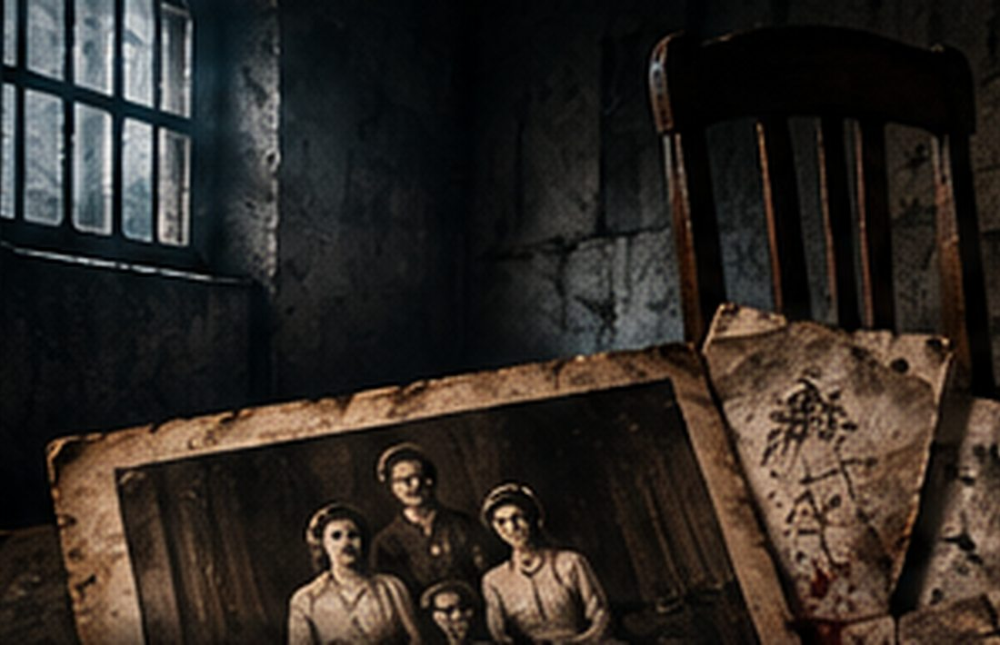
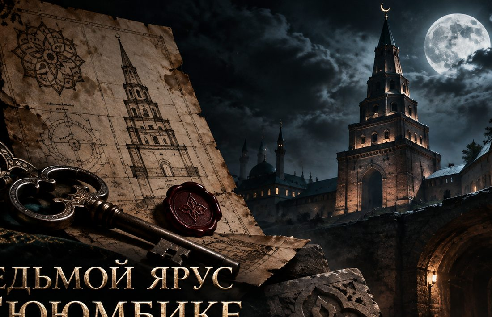
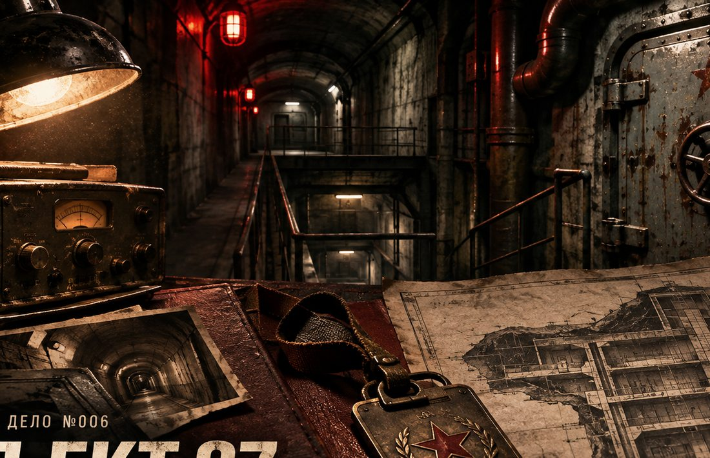
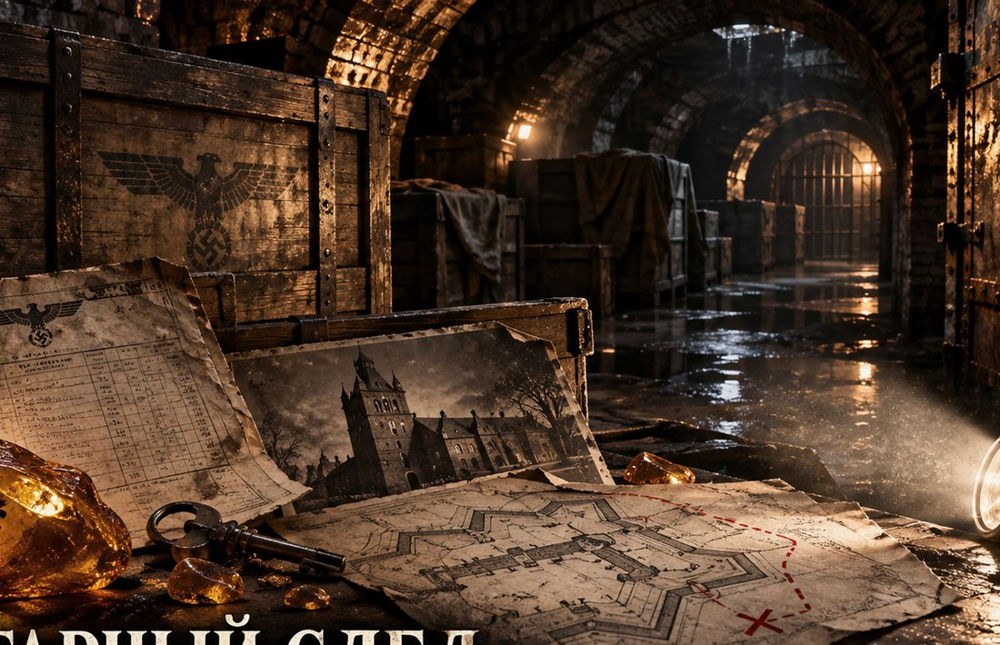

01 / МАТЕРИАЛЫИЗУЧАЙ
ИЗУЧАЙ
УЛИКИ
Находи доказательства и проверяй, что они действительно подтверждают.
Открой дело. Изучи улики. Проверь показания. Здесь историю не рассказывают до конца, ты сам должен добраться до истины.
За сухими фактами скрываются живые истории. Тебе предстоит разобраться, какие доказательства действительно связаны между собой, а какие только запутывают следствие.

Один неверный вывод может завести в тупик. Сопоставляй детали, прежде чем принимать решение.
Никаких случайных ответов и бессмысленных кнопок. Каждое действие приближает тебя к восстановлению картины произошедшего.
Находи доказательства и проверяй, что они действительно подтверждают.

Сверяй показания, проверяй алиби и возвращайся к спорным деталям.

Объедини разрозненные факты и объясни то, что произошло.
Выбирай город и открывай местные расследования. Сейчас доступны расследования в Новороссийске и Москве. Каталог будет пополняться новыми историями.
Нажми «Начать расследование». Пилотное дело откроется прямо в браузере.
Сейчас доступ открыт для тестирования. В будущем полноценные квесты будут платными, ориентировочная цена — 499 ₽.
Да. В разделе «Стать автором» можно подать заявку на платный авторский квест. Публикация и выплаты будут возможны после согласования условий и запуска продаж.

Семь городов, семь разных расследований. Найди свой город и открой дело.
Каждому городу — своя история, свои улики и собственные головоломки.

Легенда о невесте, перевал «Семь ветров», ночные снимки и следы осмотра.

Поиски библиотеки Ивана Грозного, архив 1937 года и поддельная опись.

Масонские ложи, загадочные протоколы и исторические свидетельства.

Дом Ипатьева, утраченные планы и несоответствия в свидетельствах.

Башня Сююмбике, загадка её датировки и семь архитектурных ярусов.

Секретный бункер, пропуска и инженерные схемы подземного объекта.

Исчезновение Янтарной комнаты, накладные и ложные маршруты перевозки.
Попробуй другой город или название истории.

Реально существовавший ресторан, легенда об убитой невесте и противоречия в воспоминаниях очевидцев. Отдели проверенные факты от поздних пересказов.
Сверяй публикации местной прессы, свидетельства бывших работников и фотографии разрушенного ресторана. В открытом деле есть отдельный исторический архив с источниками и головоломкой о спорной хронологии. Сюжет с современными персонажами — художественная реконструкция.
 МАТЕРИАЛЫ ДЕЛА / ВНУТРЕННИЙ АРХИВ
МАТЕРИАЛЫ ДЕЛА / ВНУТРЕННИЙ АРХИВ

Поиски тайной библиотеки Ивана Грозного, документы 1937 года и современная фальсификация.
Таинственная библиотека Ивана Грозного, реальные поиски и поддельная схема, которая обещает привести к утраченным рукописям.
Игнатий Стеллецкий искал Либерею в московских подземельях в 1933–1934 годах. В 1937 году появилось обращение с новой версией её местонахождения. Судьба библиотеки остаётся недоказанной. Современная детективная линия полностью художественная.
В частных материалах появляется карта с красным маршрутом и ссылкой на письмо 1937 года. Но один лист в папке слишком новый, а свидетельства не сходятся. Разбирайся в происхождении каждой копии, отделяй исторические факты от гипотез и выясни, кому понадобилась поддельная сенсация.

Научные сведения: исследование СПбГУ и книга И. Я. Стеллецкого. История расследования, персонажи и «карта 2026» вымышлены.
Реальные петербургские масонские общества, забытые документы и современная подделка. Попробуй отделить символ от доказательства.
Исторические ложи Елагина, «Умирающий сфинкс» Лабзина и запрет тайных обществ 1822 года подтверждены исследованиями. Исчезнувшее досье, современные персонажи и криминальная интрига созданы специально для игры.
Кто проводил собрания и почему документы разных лож противоречат друг другу?
История Лабзина и списка участников; кто добавил в него неизвестное имя?
Мальтийские символы Павла I и поздняя легенда о масонском заговоре.
Рескрипт Александра I и подлинность исчезнувшей архивной копии.
Новые конспиративные общества, протоколы встреч и спорные списки.

Платформа городских расследований, где каждый игрок становится следователем.
«ТЁМНОЕ ДЕЛО» превращает городские истории в интерактивные дела. Ты выбираешь локации, исследуешь окружение, допрашиваешь людей и формируешь вывод, опираясь на доказательства.
Внимательно изучай сцену и материалы дела.
Находи связи между уликами и показаниями.
Объясняй события, подтверждая вывод фактами.
Попробуй пилотную версию без оплаты, пока мы готовим продажу квестов.

Создавай истории, которые люди будут расследовать. Получай долю от продаж каждого опубликованного авторского квеста.